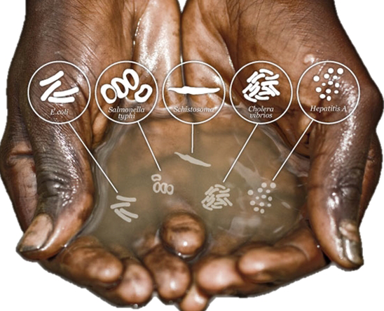

Water - Esential platform of life.
Consequences of water pollution.
Surely the consequence of polluted clean water is that it will only be seen before us right before our eyes:
Conswquences to human health.
 Water borne diseaseThe polluted water sources that have high metal toxicity such as mercury, lead ... will cause symptoms such as vomiting, headache, vomiting, blood, and if infected too much, it will lead to cancer. If there is too much lead, it will affect the brain. And water pollution may also contain organic compounds of pesticides and herbicides with high carcinogenic potential. What's more in the polluted water, there are also extremely harmful bacteria that cause diseases like scabies mites ...
Part of the contaminated water will enter the groundwater, it will seriously affect the groundwater, some surface water pollution will be very dangerous if people wash clothes and use.
Effects of polluted water on organisms, plants and on clean water sources:
About polluted water discharged into rivers and lakes will seriously destroy the ecosystem because aquatic organisms such as shrimp and fish will die causing extremely unpleasant smells, but if fish and shrimp live when caught and Put into use by humans, it will be used by humans. will seriously affect human health
Fish die by water pollution.+ Water pollution also seriously affects plants. When a water source near a field is polluted, you may notice that the rice plants will be small and not grow, causing great economic damage to people.
Rice is killed by dirty water.The government will spend a lot of money on treating polluted water, people will have to pay for treatment. Some resorts will not be able to operate due to the flood of garbage, causing great damage to the tourism industry.
The resort is polluted.